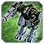
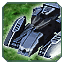
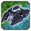
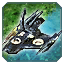
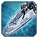

О патче
Всё меняется!
Всем Привет! Это наш ГАФ баланс. Все внесенные изменения могут быть изменены повторно.
Дисклеймер: Внесенные здесь изменения могут быть нарушены или иметь непредвиденные побочные эффекты. Если вы с чем-то столкнетесь, пожалуйста, сообщите об этом в отдел баланса на
сайте. Игровые баги репортить сюда
(канал на сервере GAF Discord).
Все изменения, которые в настоящее время внесены в GAF, позволяют нам оценить новый баланс в реальных играх.
Баланс-команда: SupremeKiska и Isakentyi
Баланс патч 1.1 «T2 Land AWAKENING AND SEA MADNESS»
Первые изменения были не болезненными и влились в игру плавно, кроме Вагнеров, на них жалуются...
Ленд
 Мангуст
Мангуст — юнит против спама. Но реализован криво.
-
Изменения
- Скорость снарядов пулемета:
30 38
- Количество снарядов пулемета:
15 20
- Количество снарядов гранатомета:
4 5
- Урон гранат:
50 55
- Сплеш гранат:
2 3
Гоплит
Гоплит похож на Мангуста. Скорость поворота башни не позволяла ему нормально мансить, из-за чего он был бесполезным.
-
Изменения
- Скорость поворота башни:
130 145
- Сплеш:
2 3
 Оплот
Оплот
Несмотря на название "Оплот", юнит весьма сомнительный. Да, он дешевый, но в целом весьма посредственный. На данный момент увеличен урон.
 Обсидиан
Медленный жирный танк. Он хорош, но ему не хватало сплэша, и башня слишком медленная. В нашем представлении это юнит, который едет и ломает кабины.
-
Изменения
- Сплеш:
0 2
- Скорость поворота башни:
75 80
Прибой
Ховеры мы видим быстрыми "кусачими" юнитами. Апнули скорость и атаку. Прибой медленнее остальных, но скорострельнее и жирнее.
-
Изменения
- Скорость передвижения:
3.8 4.3
- Урон:
13.5 15
 Вагнер
Вагнер
На Вагнера жалуются. Делаем урон поменьше.
 Пламя
Эонский ховер самый хилый, но дальность стрельбы выше, и хороший ДПС. Скорость среди ховеров средняя.
-
Изменения
- Скорость передвижения:
4.3 4.8
- Урон:
15 20
 Яшавох
Самый альфовый ховер, самый быстрый, средняя дистанция стрельбы. Изменили урон. Отняли немного и добавили скорострельность.
-
Изменения
- Урон:
200 150
- Сплеш:
0 2
- Перезарядка:
4.5 2.5
- Скорость передвижения:
4.5 5
Флот
Тигровая Акула
Т1 подлодка ОФЗ стреляла неверно, теперь она стреляет залпом 4 ракеты...
Гроза
Апнули ОФЗ фрегат. Он был "толще" остальных фрегатов, но ему это вообще не помогало из-за низкого ДПСа и скорости поворота башни.
-
Скорострельность
- DPS:
50 57
- Скорость поворота башни:
90 110
Трезубец
Добавили стоимость по массе и увеличили урон.
-
Стоимость
- Увеличено количество массы при заказе:
250 270
- Урон:
45 50
- DPS:
64 71
Маяк
Добавили дальность стрельбы. Раньше фрегат был "дальнобойным", сейчас он действительно таким является. И поменяли скорость перезарядки анти-торпедной системы (сделали как у сера
подлодок). Мы считаем, это даст жизнь Эон на Т1 стадии.
-
Дальность стрельбы
- Радиус:
33 37
- Скорость поворота башни:
90 100
- Перезарядка Анти-торпедной системы:
6.7 5
Хау-есель
На данный момент подняли урон. Если фрегат будет сильно проигрывать всем остальным — апнем.
Доблесть
Этот эсминец был "толстым", и поэтому его понерфили так, что им играть было невозможно. Мы изменили ему тип стрельбы торпедами, апнули точность и скорость снаряда и сделали реально
толстым.
-
Здоровье
- ХП:
8000 9000
- Макс ХП:
8000 9000
- Разброс снарядов:
0.35 0.25
- Допустимое отклонение:
2 4
- Скорость снаряда:
30 35
- Залп торпед:
2 6
 Иерусалим
Иерусалим
Этот эсминец был перебафан. Он стреляет дальше всех и быстро. Пока до него доплывешь, все ХП потеряно. Но с измененными эсминцами остальных рас он показался слабее, поэтому еще немного
апа. Всегда можно занерфить.
-
Урон
- Урон:
115 120
- Допустимое отклонение:
2 3
 Исход
Много лет назад Исход был под стать своему названию. У него были глубинные бомбы, и он был дальнобойным. С расстояния он не давал жить, а вблизи уничтожал все. В нынешнем (ФАФ) балансе
он тоже под стать своему имени, но в негативном плане. Мы вернули старые значения, и теперь Т2 флот Эон играбельный.
-
Возвращено
- Дальность стрельбы:
70 80
- Глубинные бомбы Урон:
0 350
- Допустимое отклонение:
2 3
- Скорость снаряда:
30 32
 Уашавох
Уашавох
Ненавистный всеми лазерный эсминец наконец-то понерфлен и немного апнут.
-
Нерф
- Скорость поворота башни:
60 55
- Урон задней пушки:
26 50
- DPS задней пушки:
72 138
Купер
Апнута скорость катера. Скорость была как у фрегатов, что позволяло им догонять его. Скорость Т2 подлодок выше, чем у фрегатов. Катер — это катер, и он должен быть быстрым.
-
Ап
- Скорость передвижения:
6.0 7.0